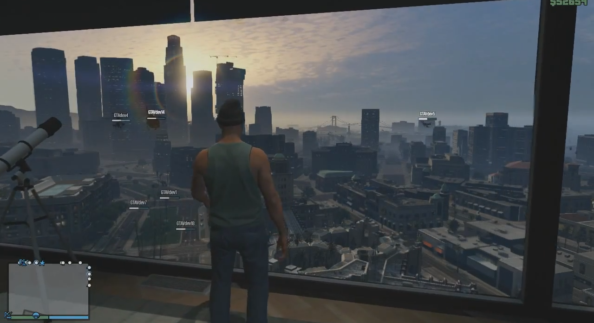

In GTA V's multiplayer Grand Theft Auto Online , een groot deel van de Free Mode-concept van haar vroegere editie is weer verschenen. In tegenstelling tot de multiplayer GTA IV, spelers kunnen niet de sessie voorwaarden niet meer (zoals politie, wapens en andere elementen) veranderen, als ze gewoon samen te voegen tot één van de beschikbare sessies. Ze hebben nog steeds de hele kaart voor zichzelf om in te spelen en de lijst met beschikbare functies en activiteiten is sterk uitgebreid op. Single-player activiteiten, zoals golf en tennis kan competitief worden gespeeld met anderen, en verdiende in-game geld kan worden besteed aan safehouses , voertuigen, kleding en wapens. Gemakswinkels verspreid over de kaart kan worden beroofd voor snel geld of worden gebruikt om voedsel te kopen om de gezondheid te herstellen.
Free Mode in GTA V is een 16-player lobby op de Xbox 360 en PS3 , en een 30-player lobby op Xbox One , PS4 en PC. Van Free Mode, de speler kan banen te ontvangen van Simeon Yetarian , Lamar Davis , Gerald , Lester Crest , Martin Madrazo , Ron Jakowski en Trevor Philips . Ook beschikbaar zijn Races , deathmatches , Jumps Parachute en nog veel meer.
Bij de introductie van de Freemode Events update (exclusief voor de verbeterde versie van het spel), gebeurtenissen en uitdagingen te beginnen in de vrije modus op de openbare lobby elke 6 in-game uur.
